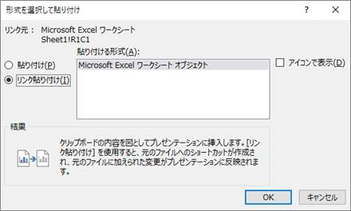
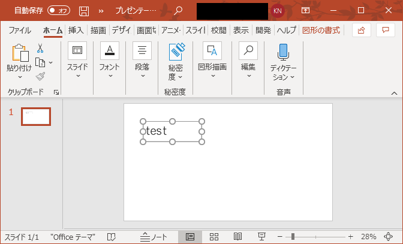
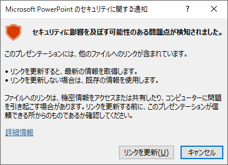
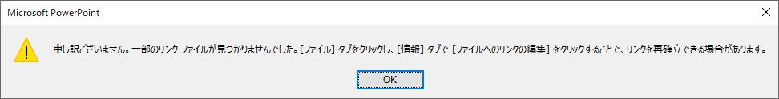
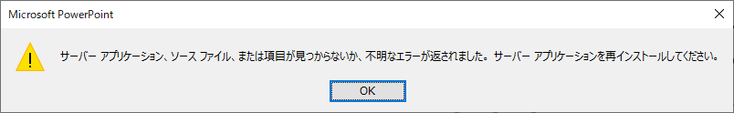

こんにちは、Office サポート チームの中村です。
Office には、Excel から PowerPoint のように異なるアプリケーション間でコピー&貼り付けを行うときに選択できる貼り付け形式として [リンク貼り付け] があります。
リンク貼り付けを行うと、Excel ファイルの値の変更に連動して PowerPoint 上に貼り付けたセルの値も更新されます。また、貼り付けた部分をダブルクリックで起動すると、貼り付け元の Excel ファイルが開かれます。
参考) 形式を選択して貼り付け
https://support.microsoft.com/ja-jp/office/e03db6c7-8295-4529-957d-16ac8a778719
この機能は、機能追加当初から想定されていたシナリオである ローカルやファイル サーバー上に格納された Office ファイルからのコピーにおいては特に問題なく利用できます。しかし、OneDrive for Business や SharePoint Online 上に格納した Office ファイルからリンク貼り付けを行うときには、日本語 (DBCS) をファイル パス (格納フォルダやファイル名) に含むとエラーが生じます。
本記事では、このクラウド上の日本語をパスに含むファイルのリンク貼り付けでのエラーの詳細について記載します。
1. 現象詳細
現象が発生する操作手順とエラーの内容は以下の通りです。
再現手順
1. OneDrive for Business や SharePoint Online のドキュメント ライブラリなどに、日本語のファイル名で、または日本語を名前に含むフォルダ内に Excel ブックを格納します。
(例 : Excel ブックに「テスト.xlsx」という名前を付ける / 「ドキュメント」というフォルダを作成してその中に Excel ブックを格納)
2. Excel ファイルを開き、任意のセル範囲をコピーします。
3. 新規 PowerPoint プレゼンテーションを作成し、[リンク貼り付け] を行います。([ホーム] タブ – [貼り付け] の下三角をクリックし、[形式を選択して貼り付け])

図 1: リンク貼り付け画面
以下のようにコピーしたセル範囲が貼り付けられます。

図 2 : リンク貼り付けされたプレゼンテーション
4. PowerPoint プレゼンテーションを .pptx 形式で保存します。(こちらはローカル フォルダなどでも構いません。また、日本語をファイル パスに含む必要はありません。)
5. Excel ブック、PowerPoint プレゼンテーションをいったん閉じます。
6. 4. で保存した PowerPoint プレゼンテーションを再度開きます。
7. 開くときに表示される以下のメッセージで [リンクの更新] をクリックすると、エラーが発生します。

図 3 : リンクの更新メッセージ

図 4 : エラー画面の例
8. また、貼り付けられたセル範囲をダブル クリックして Excel ブックを開こうとすると、エラーが発生します。

図 5 : ダブル クリック時のエラー画面の例
2. 原因
リンクの更新やダブル クリックで Excel ブックを開くため、Office アプリケーションから OneDrive for Business や SharePoint Online へ Excel ブックの格納 URL が HTTP リクエストで送信されます。この URL は、クライアントの OS ロケールを基に判断された ANSI 文字コードを使用して % エンコードが行われます (日本語環境の場合、Shift－JIS)。
例 : ファイル名「テスト.xlsx」を OneDrive for Business に格納したときの Shift-JIS エンコードの URL
https://microsoft-my.sharepoint.com/personal/username_microsoft_com/Documents/%83%65%83%58%83%67.xlsxしかしながら、OneDrive for Business や SharePoint Online は UTF-8 文字コードを使用することを期待しているため、ファイルを見つけることができずエラーが発生します。
例 : ファイル名「テスト.xlsx」を OneDrive for Business に格納したときのUTF-8 エンコードの例
https://microsoft-my.sharepoint.com/personal/username_microsoft_com/Documents/%E3%83%86%E3%82%B9%E3%83%88.xlsxOneDrive for Business や SharePoint Online 上の日本語をパスに含むファイルからもリンク貼り付けを可能とすることを検討しましたが、Office は Windows OS の WinInet コンポーネントの公開 API を利用してエンコードを行っており、他のプログラム利用上の互換性を考慮し、WinInet コンポーネントの既定の動作を変更することができません。(昨今では URL のエンコードでは UTF-8 が利用されることが主流ですが、このような時流となる以前から ANSI でエンコードを行う API として公開されています。)
このため、OneDrive for Business や SharePoint Online上の日本語 (DBCS) をパスに含むファイルからのリンク貼り付けで生じる上記の問題は、現状では制限事項となります。
3. 回避策
以下のいずれかの方法でエラーを回避できます。
・ レジストリを設定して HTTP 通信時に UTF-8 でエンコードする
以下のレジストリを設定すると、WinInet の URL エンコードを UTF-8 に変更できます。したがって、このレジストリを設定すると、期待通りにリンクの更新や貼り付けられたファイルをダブルクリックで開くことができます。
キー : HKEY_CURRENT_USER\SOFTWARE\Policies\Microsoft\Windows\CurrentVersion\Internet Settings
名前 : EnableUTF8
種類 : REG_DWORD値 : 1
※ Office のリンク貼り付け以外の、各アプリケーションでの WinInet を利用する HTTP 通信も UTF-8 でエンコードされるようになります。一般的な Web システムでは UTF-8 でエンコードされた URL を扱うことができると考えられますが、お客様社内用システムなどの限定的な利用を目的とするシステムでは、クライアント アプリケーションが WinInet API 既定の ANSI エンコードである前提で開発された Web システムがある可能性があります。このような Web システムがある場合、このレジストリを設定すると影響が生じます。
・ ファイル パスに日本語 (DBCS) 文字を使用しない
・ 貼り付け元ファイルをローカルや UNC 共有のファイル サーバーに格納する
今回の投稿は以上です。
本情報の内容 (添付文書、リンク先などを含む) は、作成日時点でのものであり、予告なく変更される場合があります。